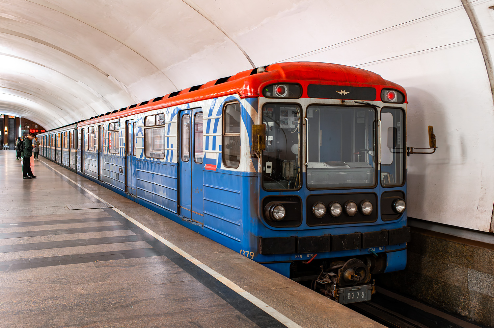

0373-0379
Это уникальные номерные вагоны модели 81-717.5М (МВМ) с трёхцветной окантовкой маски — главной отличительной чертой. Оба вагона эксплуатируются в ТЧ-17 «Южное» на Замоскворецкой линии и иногда ходят вместе в одном составе.
0373 построен 12.1993, 0379 — 02.1994. Оба прошли капитальный ремонт на ДМЗ и получили бренд-окрас «Московский транспорт».
Общая информация
Вагон № 0373
| Параметр | Значение |
|---|---|
| Модель | 81-717.5М (МВМ) |
| Построен | 12.1993 |
| Депо | ТЧ-17 «Южное» |
| Текущее состояние | Эксплуатируется |
| Назначение | Пассажирский |
| Особенность | Трёхцветная окантовка маски |
Вагон № 0379
| Параметр | Значение |
|---|---|
| Модель | 81-717.5М (МВМ) |
| Построен | 02.1994 |
| Депо | ТЧ-17 «Южное» |
| Текущее состояние | Эксплуатируется |
| Назначение | Пассажирский |
| Особенность | Трёхцветная окантовка маски |
Особенность: Трёхцветная окантовка маски — главная отличительная черта обоих вагонов. Иногда 0373 и 0379 ходят вместе в одном составе.
История вагона 0373
Постройка
Вагон построен на заводе МВМ (Метровагонмаш).
Депо ТЧ-10 «Свиблово»
Поступил в депо приписки ТЧ-10 «Свиблово».
Капитальный ремонт / ДМЗ
Капитальный ремонт на ДМЗ. После ремонта — бренд-окрас «Московский транспорт», трёхцветная окантовка маски.
Вагон для перегонок
Использовался для перегонок, базировался в ТЧ-20 «Руднёво».
Хранение в ТЧ-18 «Солнцево»
Находился на хранении в ТЧ-18 «Солнцево».
Перегонки (ТЧ-20)
Вагон для перегонок, базировался в ТЧ-20 «Руднёво».
Перегонки (ТЧ-18)
Вагон для перегонок, базировался в ТЧ-18 «Солнцево».
Возврат в эксплуатацию
Состав вернулся к пассажирской работе на Замоскворецкой линии. Текущее состояние: эксплуатируется в ТЧ-17 «Южное».
История вагона 0379
Постройка
Вагон построен на заводе МВМ (Метровагонмаш).
Депо ТЧ-10 «Свиблово»
Поступил в депо приписки ТЧ-10 «Свиблово».
Капитальный ремонт / ДМЗ
Капитальный ремонт на ДМЗ. После ремонта — бренд-окрас «Московский транспорт», трёхцветная окантовка маски.
Хранение в ТЧ-18 «Солнцево»
Находился на хранении в ТЧ-18 «Солнцево».
Эксплуатация в ТЧ-17 «Южное»
Эксплуатируется в ТЧ-17 «Южное» на Замоскворецкой линии.
Экстерьер
Окраска
- 0373: 12.1993 — 09.2016: бирюзового цвета с белыми полосами по борту
- 0379: 02.1994 — 12.2016: бирюзового цвета с белыми полосами по борту
- Оба: с 2016: бренд-окрас «Московский транспорт»
Компоновка фар
- До 2016: 2-2-2
- С 2016: 1-4-1
Особенности
- ✅ Трёхцветная окантовка маски (главная особенность)
- ✅ Три ребра жёсткости
- ✅ Вертикальное расположение сигнальных ламп
Уникальность
- 0373 и 0379 — трёхцветная окантовка маски
- Иногда ходят вместе в одном составе
Интерьер
Сиденья
- До 2016: диваны, обшитые кожзаменителем
- С 2016: антивандальные сиденья синего цвета с ортопедической спинкой
Пластик
- До 2016: жёлтого цвета под дерево
- С 2016: пластиковые композитные модели
Освещение
- До 2016: лампы типа ЛПВ-02
- С 2016: светодиодная световая линия
Поручни
- Вертикальные поручни
Эволюция изменений
| Элемент | До 2016 | После 2016 |
|---|---|---|
| Окраска | Бирюзовый с белыми полосами | Бренд-окрас «Московский транспорт» |
| Маска | Стандартная | Трёхцветная окантовка |
| Фары | 2-2-2 | 1-4-1 |
| Сиденья | Диваны (кожзаменитель) | Антивандальные синие (ортопедические) |
| Пластик | Жёлтый «под дерево» | Композитные панели |
| Освещение | ЛПВ-02 | Светодиодная линия |
Фотогалерея

С трёхцветной окантовкой маски.
Нажмите на фото для увеличения
«0373 и 0379 — уникальные вагоны, которые привлекли внимание энтузиастов своей трёхцветной маской. За годы эксплуатации они прошли капитальный ремонт, сменили несколько депо и окраску, но сохранили свою главную особенность — необычное оформление передней части. Иногда они ходят вместе».